0: Calibrating Your Camera and Capturing a 3D Scan
After calibration, my frustram visualization looked like the following:
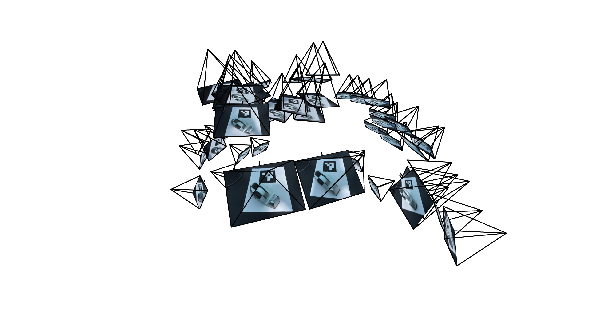
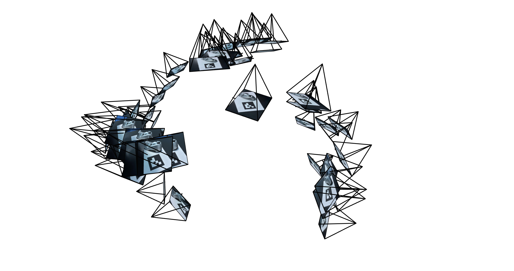
1: Fit a Neural Net to a 2D Image
I started with the model architecture suggested in the project specification:
A max coding positional encoding frequency of 10, hidden layer width 10, 4 linear layers,
and ReLU activations between linear layers, except for the last activation, which is
a sigmoid.
The results of training on the fox image are as follows. The images are for after 0, 250,
1000, and 3000 batches of size 10,000, respectively.
The fifth image is the ground truth image, and the sixth is
the PSNR curve.
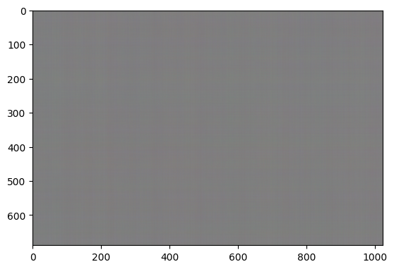
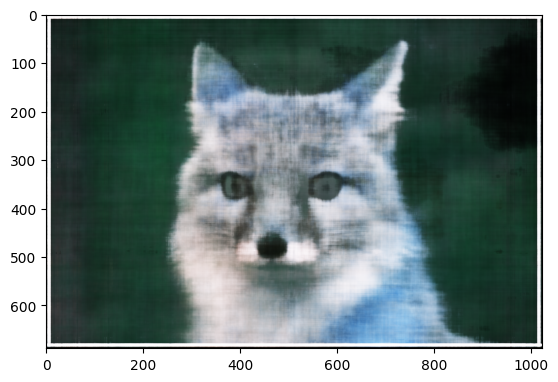
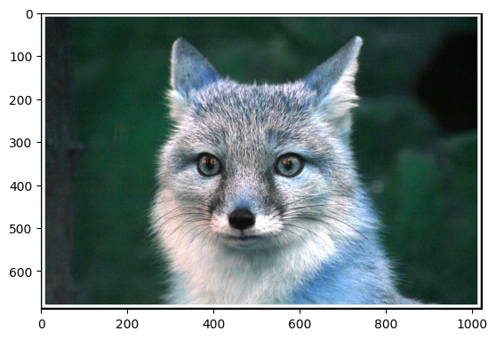
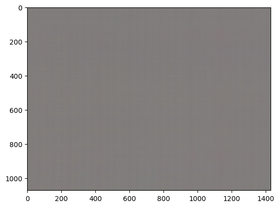
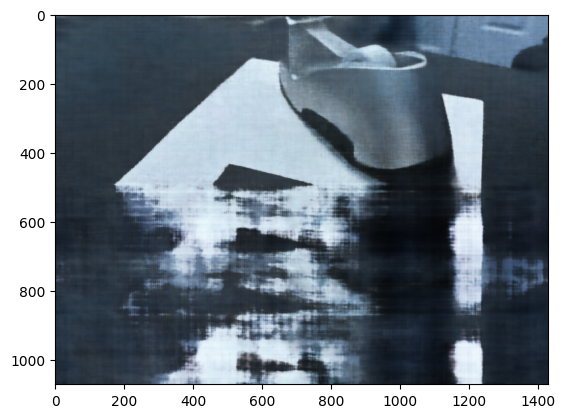
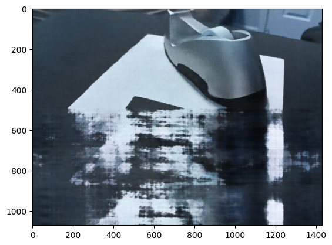
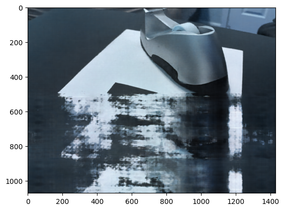
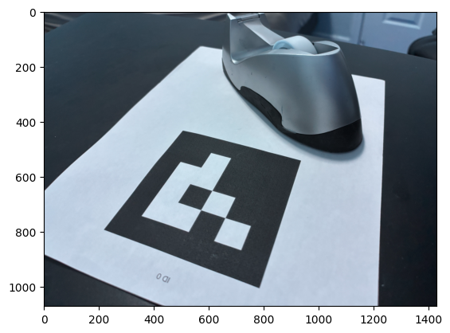
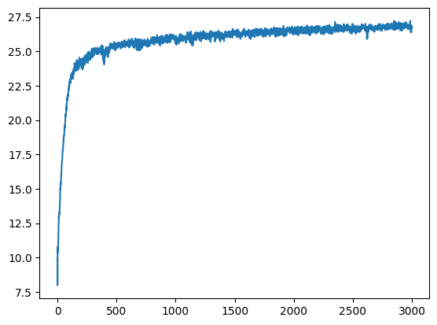
Notably, the fox image network learned well. It initally had a box filter
pattern, but it is less visible after 3000 batches. The frequency is a bit low,
so the hair is not shown well by the network.
For the tape, the main issue was the aruco tag. The corners of the page were
learned well, but the aruco tag is likely poorly suited for a neural network.
I also tried networks with slightly different hyperparameters: one with hidden layer
width 128, one with hidden layer width 512, one with a max positional
encoding frequency of 5, and one with a max positional encoding frequency of 20.

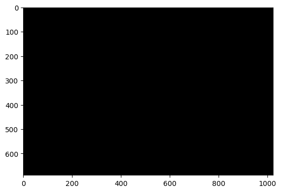
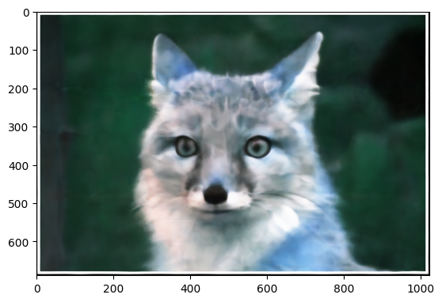
The network with width 512 performed poorly, and had very high
training error.